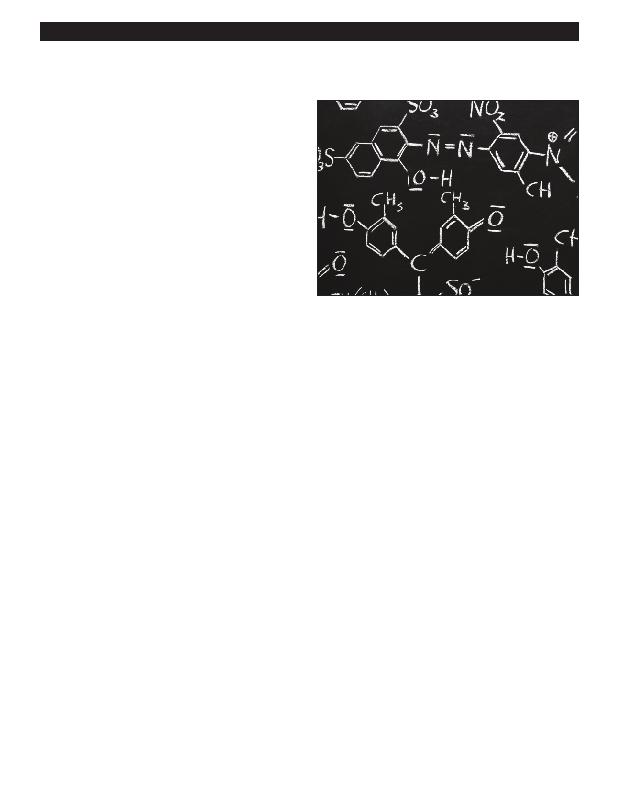

PA RT I C I PA N T R E S O U R C E G U I D E
Refrigerants and their Special Properties (continued)
What Makes a Good Refrigerant?
There are many different types of refrigerants in use, but the
best ones:
Have low boiling points
Are non-toxic and non-reactive
And are safe for the earth’s ozone layer, just as Section
608 of the Clean Air Act requires
For many years, chemical compounds called
hydrochlorofluorocarbons (HCFCs) were the refrigerants of
choice, because they boiled at just the right temperature
and were non-toxic. Perhaps you’ve heard of R-22, a HCFC
used in many air conditioning systems.
Today, however, HCFCs are being replaced by
hydrofluorocarbons (HFCs). HFCs do all that CFCs and
HCFCs do, but they don’t damage the earth’s ozone
layer, and therefore, meet the Clean Air Act requirements.
Examples of HFC refrigerants include R-134A and R-410A.
To find out more about the Section 608 Clean Air Act
requirements, see Section 3 of your HVAC Servicing
Procedures manual, or visit this page at the Environmental
Protection Agency website: www.epa.gov/Ozone/
title6/608/608fact.html.
Notes:
13